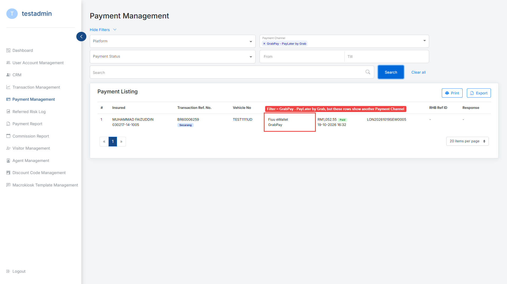
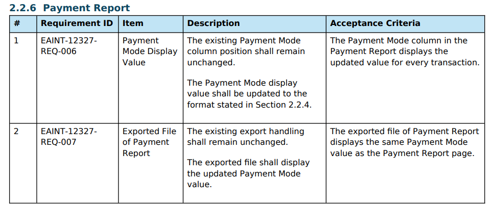
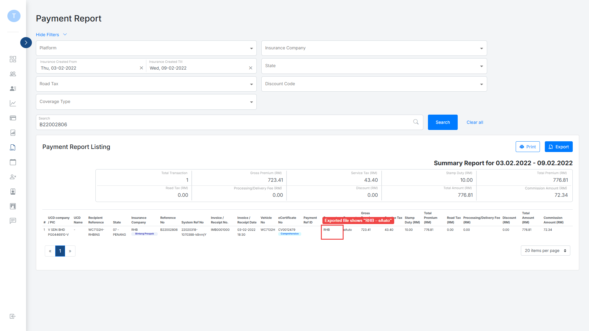
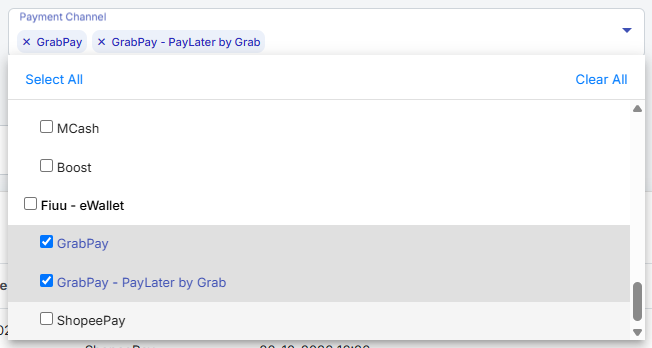
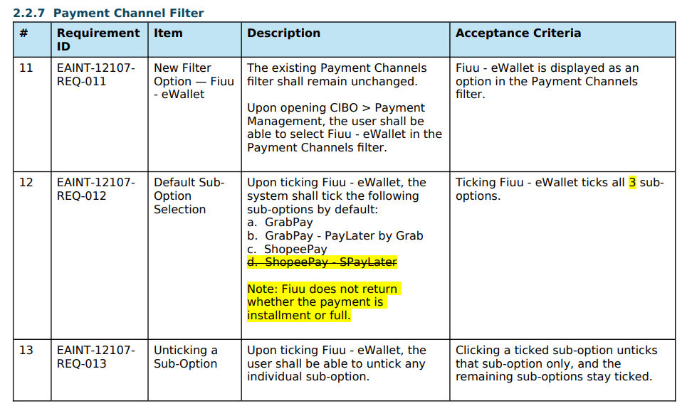

Payment Management, filter = GrabPay - PayLater by Grab. The filter returns only BR60006259 (the transaction dev patched to PayLater by Grab), but its Payment Channel reads "Fiuu eWallet GrabPay".
Ensure listing & excel only show transactions with Payment Channel = GrabPay - PayLater by Grab12107_TS06 · steps 6–8, Expected Result
3. Payment channel displaying Fiuu eWallet [Payment Method]12107_TS05 · CIBO Expected Result · Payment Management page
"BR60006259","Secarang","TEST1111UD","Fiuu eWallet | GrabPay","RM1,052.55","Paid","19-10-2026 16:32","LON20261019SEW0005"12107_TS06-GrabPay-PayLater-by-Grab-export.csv · the only row
Nothing on this. SRD 12107 v1.2 has no rule for the Payment Channel text in the results; §2.2.7 covers only how the filter ticks behave (see "Passed"). The expected text comes from the TS.
None of these states the Payment Channel text for a PayLater row. Together they say PayLater by Grab is a GrabPay payment told apart by a Fiuu indicator, not a separate channel.
1. spay later and paylater by grab are not separate payment channels. / fiuu confirmed they are options inside the shopee and grab apps. on our / side we only add 2 channels, shopeepay and grabpay. … fiuu returns a field / grabpay_indicator (GPWALLET, POSTPAID, INSTALMENT_4), and our backend already reads this same block of data for card / payments. just need 1 new column.Teams, EAINT-12107 CR chat · 2026-09-03 19:06 · Kasheng Liew (dev)
Hi Everyone To add on for CIBO > Payment Management > Payment Channels filter, here is the new filter name ya: [x] Fiuu - eWallet [x] GrabPay [x] GrabPay - PayLater by Grab [x] ShopeePay [x] ShopeePay - SPayLater Kindly take note that Shamini just need to know whether it is full payment or installment - no need to state instalment monts.Teams, EAINT-12107 CR chat · 2026-09-07 18:10 · Yi Link Lim (BA) · filter names only
4. cibo - grabpay paylater filter is not in the dropdown yet because we can only check the indicator in production. will add it after we confirm fiuu does pass the indicator.Teams, EAINT-12107 CR chat · 2026-09-08 17:15 · Kasheng Liew (dev)
3. ee435087-2054-4aa5-8fe6-753d7bfee06b - GrabPay PayLater (Instalment)Dev message relayed by Faizuddin · 2026-10-19 · the patch request for BR60006259

B22002806 (eAuto, paid 03-02-2022). Same value "RHB" on Transaction Listing, its export and the Payment Report page; only the Payment Report export differs. B24000169 (RMS) matches on all 4.
Ensure for each transaction: 1. Payment Mode shows a value on the Transaction Listing 2. Payment Mode shows the same value on the Exported Transaction Listing 3. Payment Mode shows the same value on the Payment Report 4. Payment Mode shows the same value on the Exported Payment Report12327_TS19 · CIBO Expected Result


| Where | Transaction Ref. No. | Payment Mode | Platform |
|---|---|---|---|
| Transaction Listing export | B22002806 | RHB | eAuto |
| Payment Report page | B22002806 | RHB | eAuto |
| Payment Report export | B22002806 | RHB – eAuto | eAuto |

